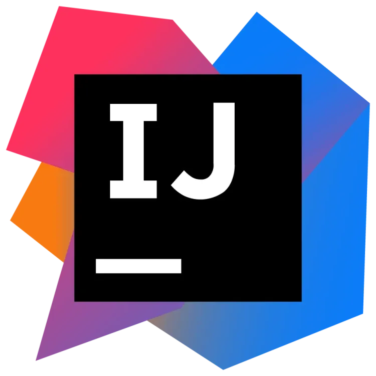
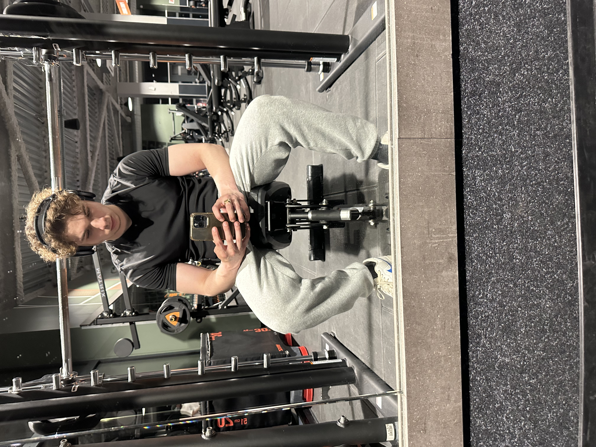

// À propos
Qui suis‑je ?

Programmation
Depuis petit, je trouve une passion pour le code. J'aime concevoir des choses par moi-même et apprendre de nouveaux langages. Je suis toujours à la recherche de nouveaux défis et de nouvelles technologies à explorer.
J'ai notamment appris Python, Java, C++ et JavaScript, et je continue à me former sur des outils comme FastAPI, Docker et les LLMs. J'ai réalisé des projets personnels en dehors du cursus : pipelines MLOps, systèmes RAG, APIs.
J'aime aussi participer à des hackathons et des compétitions de programmation pour améliorer mes compétences. Je me suis formé sur W3Schools, OpenClassrooms et Udemy, en parallèle de mon alternance.

Automobile
Être passionné par l'automobile va bien au-delà d'un simple intérêt. J'admire le travail d'ingénierie minutieux derrière chaque véhicule, je suis fasciné par les lignes intemporelles des modèles anciens et captivé par le rugissement des moteurs.
J'aime les rassemblements automobiles, échanger avec d'autres passionnés, partager des anecdotes sur des modèles emblématiques. Assister à des courses me permet de ressentir toute l'intensité de la compétition.

Musculation
Depuis mon enfance, le sport a toujours joué un rôle essentiel dans ma vie. Tennis, basket, MMA, ping-pong, badminton - chaque discipline a construit quelque chose : précision, esprit d'équipe, rigueur mentale.
Aujourd'hui, c'est dans la musculation que je trouve pleinement satisfaction. J'apprécie le fait de repousser mes limites, d'organiser mes séances, de suivre ma progression. C'est un véritable mode de vie, un équilibre harmonieux entre le corps et l'esprit.
Musique
Ma passion pour la musique m'a permis de m'exprimer de manière unique. Grâce à FL Studio, j'ai exploré différents styles : du rap à la trap, en passant par des atmosphères cinématographiques.
J'aimais collaborer avec des artistes, comprendre leur univers et leur proposer des instrumentales qui leur correspondaient. Même si aujourd'hui je suis très investi dans d'autres activités, la musique reste un pilier essentiel dans ma vie.
Profil professionnel
3 qualités
3 défauts
Façon de travailler